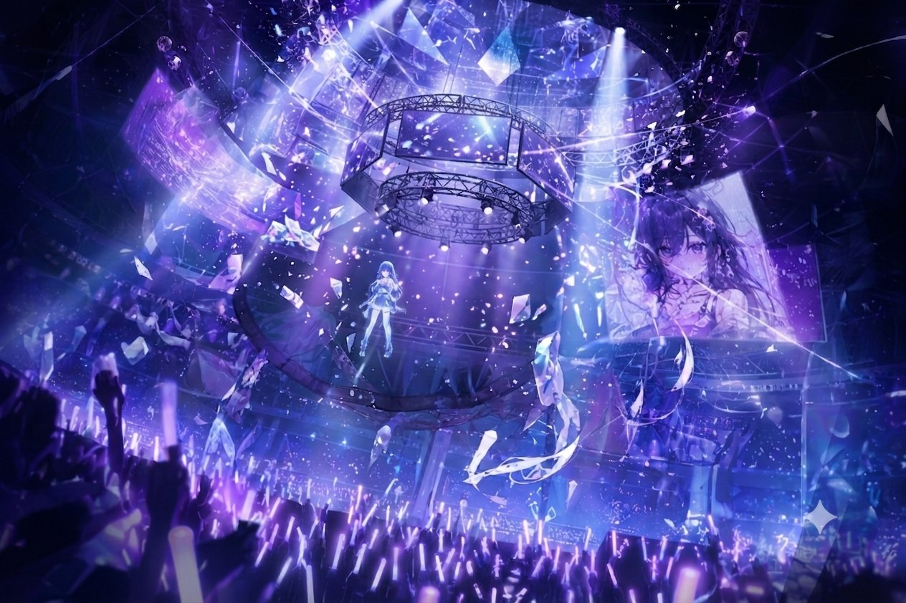
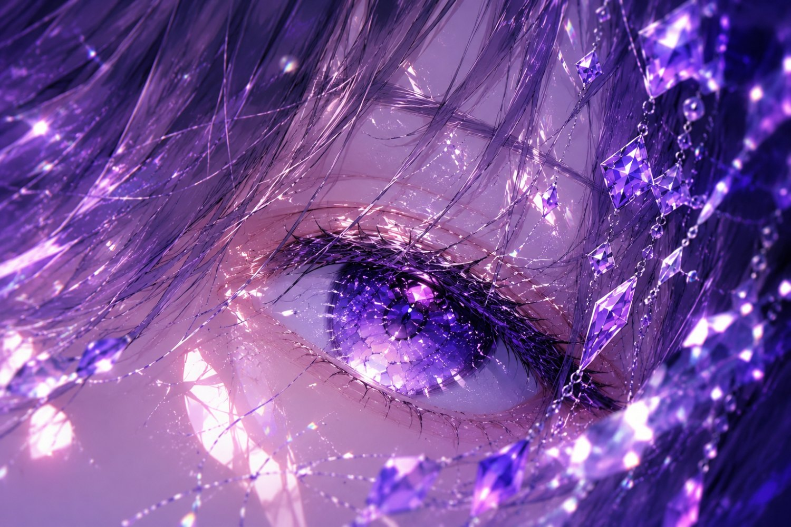

幽ヶ崎 海月 · DEEP PRISMAE LYRIC MV WORKSHOP
06
FINAL CUT
& EXPORT
最終仕上げと書き出し — YouTube最適化
映像を“作品”として完成させる。
色調・質感・構造を整え、公開に耐える完成形へ。
色調・質感・構造を整え、公開に耐える完成形へ。
COLOR GRADE
GRAIN
H.264 · THUMB

6
01TODAY'S GOALS
今日のゴール
MVとして公開できる“完成形”を作る
- MV全体の色調を統一できる
- グレインで素材を馴染ませられる
- 最終コンポを正しく組める
- YouTube向けの書き出し設定ができる
- サムネイルを制作できる
“From draft to release.”
違和感ゼロが、完成の基準。
6
02FINISHING PIPELINE
仕上げ工程の全体像
この工程で作品の“完成度”が決まる
1
◑
色調統一
GRADING
2
▒
ノイズ追加
GRAIN
3
▣
最終コンポ
COMPOSITE
4
▶
書き出し
EXPORT
5
▦
サムネイル
THUMBNAIL
最終仕上げ＝世界観の統一。
6
03COLOR GRADING
色調統一
色調が揃うと“プロの映像”に見える
BEFORE — 素材のまま
AFTER — Deep Prism グレード
影 / 中間 / ハイライトを整え、色温度を合わせる
- キャラの肌色が破綻していないか
- 背景が主役を奪っていないか
- サビだけ少し明るくするのも有効
- 全体のコントラストを統一
6
04LUT & MANUAL GRADE
LUTと手動カーブ
LUTは“調整レイヤー経由”が鉄則 — なくてもOK
◔ LUT — プリセット
- 1調整レイヤーを最上部に
- 2Apply Color LUT を追加
- 3フリーLUTを読み込む
- 4不透明度を30〜60%に
◵ CURVES — 手動（LUTなし）
- RGB：S字カーブでコントラスト
- R：シャドウに足す → 温かみ
- B：ハイライトを引く → 映画調
- Levels 出力を235に → 柔らかく
ガンマシフト対策：リニア変換をOFF
6
05GRAIN — THE GLUE
グレインの役割
グレインは“素材を馴染ませる接着剤”
- CG特有の“綺麗すぎる質感”を消す
- キャラ・背景・エフェクトを統一
- 0.3〜1.0%の弱いノイズが最適
推奨ノイズ量0.3–1.0%
役割統一感の付与
過剰にすると“汚れ”になる
6
06FINAL COMP STRUCTURE
最終コンポ構造
順番が崩れると画面が破綻する — 上から順に重ねる
08GRAINグレイン
07GRADEカラーグレーディング
06FX撮影効果（グロー・色収差・シェイク）
05TEXT歌詞（テキスト）
04CHARAキャラクター
03FG前景・装飾
02MG中景・パララックス
01BG背景
“Order is everything.”
グレイン・グレードは必ず“最上層”に置く。
6
07PRE-FLIGHT CHECK
最終チェックポイント
“違和感ゼロ”が完成の基準
音ズレがないか
歌詞の誤字・タイミング
カメラの揺れが強すぎないか
色が破綻していないか
画面の明るさが適切か
パララックスが破綻していないか
6
08EXPORT · YOUTUBE 1080P
書き出し設定
YouTubeは“高ビットレートほど綺麗に残る”
FormatH.264
PresetYouTube 1080p
Bitrate20–30 Mbps
Frame Rate29.97 fps
⚙ 必ずONにする
Render at Maximum Depth
Use Maximum Render Quality
⚠ 書き出し時の注意
- 黒つぶれ／白飛びがないか
- 音量 -14〜-12 LUFS
- 冒頭1秒は黒にしない
6
09THUMBNAIL — THE FACE
サムネイル制作
サムネイルは“作品の入口” — 出来で再生数が変わる
- GPTで生成したキャラを使用
- 明るい色・大きい文字
- 3〜5語の短いタイトル
- 目線がカメラを見る構図が強い

THUMBNAIL — SAMPLE
DEEP
PRISM
PRISM
明るい色・大きな文字・カメラ目線 — クリックされる顔
6
10WORKSHOP · 30 MIN
ワーク：最終仕上げ
MVとして公開できる状態にする
全曲の色調統一
グレイン追加
最終コンポ整理
書き出し（1分以内）
サムネイル制作
講評ポイント — REVIEW
- 色調の一貫性
- グレインの適量
- 書き出しの設定
- サムネのクリック性
6
116 SESSIONS · WHAT YOU LEARNED
6回で身についたスキル
企画から公開まで、MV制作の全工程
01
AI素材生成
GPT / SUNO
02
楽曲解析
BPM / MARKER
03
Vコンテ制作
COMPOSITION / CAMERA
04
パララックス
2.5D SPACE
05
撮影効果
GLOW / SHAKE
06
書き出し・サムネ
EXPORT / THUMBNAIL

DEEP PRISM · AE LYRIC MV WORKSHOPFIN
YOU CAN MAKE
AN MV NOW.
あなたはもう、“MVを1人で作れる”レベルに到達している。
幽ヶ崎 海月 — DEEP PRISM · LIGHT, AND THE DEEP SEA